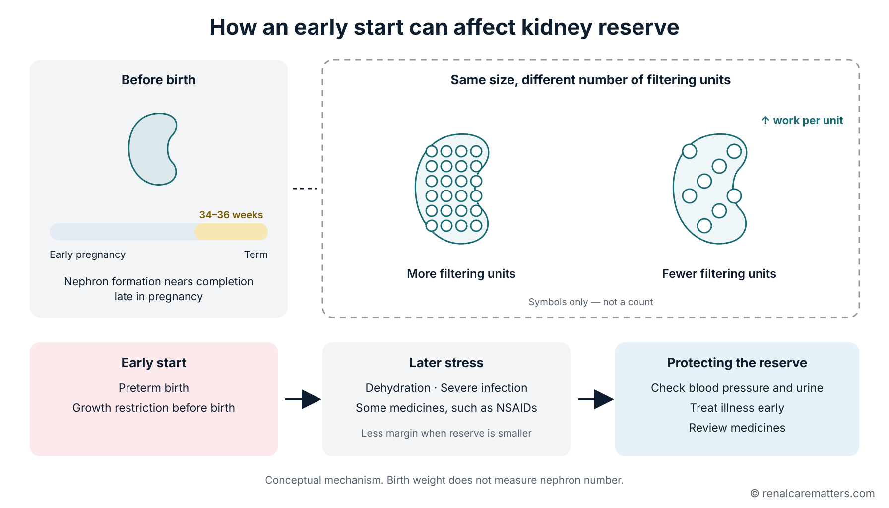
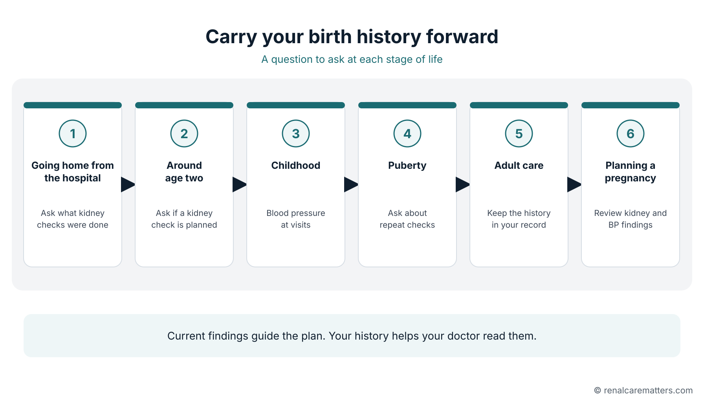

Need help now?Kailangan ng tulong ngayon?Nagkinahanglan og tabang karon?Kailangan saup ngeni?
Trouble breathing, collapse, confusion, or being hard to wake needs emergency care. Much less urine than usual, fewer wet diapers during illness, persistent vomiting with poor intake, or new swelling needs prompt medical assessment. For a newborn or young infant, poor feeding or unusual sleepiness needs same-day assessment. Do not wait to finish the planner.Kailangan ng emergency care ang hirap sa paghinga, pagbagsak, pagkalito, o hirap gisingin. Kailangang agad magpasuri kung mas kaunti ang ihi kaysa karaniwan, mas kaunti ang basang diaper habang may sakit, tuloy-tuloy ang pagsusuka at hindi makakain o makainom, o may bagong pamamaga. Para sa bagong silang o maliit na sanggol, kailangang masuri sa parehong araw ang hindi pagdede o kakaibang pagkaantok. Huwag nang hintaying matapos ang planner.Nagkinahanglan og emergency care ang lisod nga pagginhawa, pagkapukan, pagkalibog, o lisod pukawon. Kinahanglang dayon magpasusi kung mas diyutay ang ihi kaysa kasagaran, mas diyutay ang basa nga diaper samtang masakiton, padayon nga pagsuka nga dili makakaon o makainom, o adunay bag-ong panghubag. Alang sa bag-ong natawo o gamay nga masuso, kinahanglang masusi sa samang adlaw ang dili pagsuso o talagsaong pagkatulogon. Ayaw na hulata nga mahuman ang planner.Kailangan ning emergency care ing masakit a pamanginga, pamagbagsak, pamagkalitu, o masakit a pukawan. Kailangan agad magpalawe nung mas kakaunti ing ihi kesa karaniwan, mas kakaunti ing mabasang diaper kabang masakit, tuli-tuling pamuta at e makapangan o makainum, o atin bayung pamagbaga. Para king bayung mibait o malating sanggol, kailangan yang lawan king pareung aldo ing e pamanyusu o kakaibang pangatuk. Eme ne panayan a mayari ing planner.
Paalala: draft pa ang salin na ito at hinihintay ang pagsusuri ng katutubong tagapagsalita. Ang Ingles na bersyon ang sinuri.Pahinumdom: draft pa kini nga hubad ug naghulat sa pagsusi sa lumad nga mamumulong. Ang Ingles nga bersyon ang nasusi.Paalala: draft pa ing salin a iti at manaya king pamanigaral ning katutubung manyalita. Ing Ingles a bersyun ing linawe.
Your kidneys were built before you were bornNabuo ang iyong mga bato bago ka pa ipanganakNaporma ang imong mga bato sa wala pa ka matawoMibuo la reng batu mu bayu ka pa mibait
Being born early, being smaller than expected for your stage of pregnancy, or having a difficult newborn course can leave a lasting mark on kidney resilience. That history is worth remembering even when you feel well today.Ang pagsilang nang maaga, ang pagiging mas maliit kaysa inaasahan para sa yugto ng pagbubuntis, o ang mahirap na kalagayan noong bagong silang ay maaaring mag-iwan ng pangmatagalang marka sa katatagan ng bato. Mahalagang tandaan ang kasaysayang ito kahit maayos ang iyong pakiramdam ngayon.Ang pagkatawo nga sayo, ang pagkagamay kaysa gipaabot alang sa yugto sa pagmabdos, o ang lisod nga kahimtang sa bag-ong natawo mahimong magbilin og dugay nga marka sa kalig-on sa bato. Angay hinumdoman kini nga kasaysayan bisan og maayo ang imong gibati karon.Ing pangabait a maaga, ing pangamalati kesa king inaasahan para king yugtu ning pamagbuntis, o ing masakit a kalagayan kanitang bayung mibait, malyari lang magtagan marka king katatagan ning batu. Mayalaga ing tandanan ing kasaysayan a iti agyang mayap ing pakiramdam mu ngeni.
It does not mean that kidney disease is inevitable. It means your doctor has one more useful piece of information when deciding what to check, how to prescribe safely, and how closely to watch you during an illness.Hindi ito nangangahulugang tiyak na magkakasakit ka sa bato. Nangangahulugan ito na may isa pang kapaki-pakinabang na impormasyon ang iyong doktor sa pagpapasya kung ano ang susuriin, paano magreseta nang ligtas, at gaano kalapit ka babantayan kapag may sakit ka.Wala kini magpasabot nga siguradong magka-sakit ka sa bato. Nagpasabot kini nga ang imong doktor adunay usa pa ka mapuslanong impormasyon sa pagdesisyon kung unsa ang susihon, unsaon pagreseta nga luwas, ug unsa ka duol ka bantayan kung masakiton ka.Ali ya buring sabyan a siguradu kang magkasakit king batu. Buri nang sabyan a atin pang metung a makasaup a impormasyun ing doktor mu king pamagpasya nung nanu ing lawan, makananu ya magreseta a ligtas, at nung makananu kang babantayan nung masakit ka.
This guide is for parents, adolescents, adults who were born small or early, and the clinicians who care for them. The patient section explains what to do with that history. The clinician section examines the evidence and a practical approach to follow-up.Ang gabay na ito ay para sa mga magulang, tinedyer, mga nasa hustong gulang na ipinanganak nang maliit o maaga, at sa mga doktor na nag-aalaga sa kanila. Ipinaliliwanag ng bahaging pang-pasyente kung ano ang gagawin sa kasaysayang ito. Sinusuri naman ng bahaging pang-doktor ang ebidensya at isang praktikal na paraan ng follow-up.Kini nga giya alang sa mga ginikanan, tin-edyer, mga hamtong nga natawo nga gamay o sayo, ug sa mga doktor nga nag-atiman kanila. Ang bahin alang sa pasyente nagpatin-aw kung unsa ang buhaton niini nga kasaysayan. Ang bahin alang sa doktor nagsusi sa ebidensya ug usa ka praktikal nga paagi sa follow-up.Ing giya a iti para kareng pengari, binatilyu at dalaga, matwang tau a mibait a malati o maaga, at kareng doktor a manalaga karela. Ipaliwanag na ning bage para king pasyente nung nanu ing gawan king kasaysayan a iti. Lawan na ning bage para king doktor ing ebidensya at metung a praktikal a paralan ning follow-up.
The one-minute answerAng sagot sa isang minutoAng tubag sa usa ka minutoIng sagot king metung a minutu
- Keep a record of birth weight, weeks of pregnancy at birth, and any newborn kidney injury or major condition present from birth.Itala ang timbang noong ipinanganak, ang bilang ng linggo ng pagbubuntis noong ipinanganak, at anumang pinsala sa bato o malaking kondisyon mula pagkasilang.Irekord ang timbang sa pagkatawo, ang gidaghanon sa semana sa pagmabdos sa pagkatawo, ug bisan unsang kadaot sa bato o dakong kondisyon gikan sa pagkatawo.Italan ing timbang kanitang mibait, ing bilang ning linggu ning pamagbuntis kanitang mibait, at nanumang pinsala king batu o masikan a kondisyun manibat kanitang mibait.
- Bring that history to your doctor. Blood pressure, urine findings, and kidney-function tests tell different parts of the story.Dalhin ang kasaysayang ito sa iyong doktor. Magkakaibang bahagi ng kuwento ang sinasabi ng presyon ng dugo, resulta ng ihi, at mga test ng paggana ng bato.Dad-a kini nga kasaysayan sa imong doktor. Lainlaing bahin sa istorya ang gisulti sa presyon sa dugo, resulta sa ihi, ug mga test sa paglihok sa bato.Darwan me ing kasaysayan a iti king doktor mu. Miyayaliwang bage ning kwentu ing sasabyan ning presyon ning daya, resulta ning ihi, at reng test ning pamagobra ning batu.
- Take dehydration and medicine safety seriously, especially during vomiting, diarrhea, severe infection, or surgery.Seryosohin ang dehydration at kaligtasan sa gamot, lalo na kapag nagsusuka, nagtatae, may malubhang impeksyon, o ooperahan.Seryosoha ang dehydration ug kaluwasan sa tambal, labi na kung nagsuka, nagkalibanga, adunay grabeng impeksyon, o operahan.Seryosuan ing dehydration at kaligtasan king gamut, lalu na nung mamuta, magtae, atin malalang impeksyun, o operan.
- Match follow-up to the whole person. Being born small does not by itself diagnose chronic kidney disease or fix a lifelong blood-test schedule.Iakma ang follow-up sa buong tao. Ang pagsilang nang maliit ay hindi mismong diagnosis ng chronic kidney disease at hindi nagtatakda ng panghabambuhay na iskedyul ng blood test.Ipahiangay ang follow-up sa tibuok nga tawo. Ang pagkatawo nga gamay dili mismo diagnosis sa chronic kidney disease ug dili magtakda og tibuok-kinabuhi nga iskedyul sa blood test.Ibagay ing follow-up king buung tau. Ing pangabait a malati ali ya mismung diagnosis ning chronic kidney disease at ali ya magtakda iskedyul ning blood test a panyabang bie.
Four terms that describe different thingsApat na terminong naglalarawan ng magkakaibang bagayUpat ka termino nga naghulagway sa lainlaing butangApat a termino a manlarawan king miyayaliwang bage
"Small baby" is a description. The details help your doctor understand what actually happened.Ang "maliit na sanggol" ay isang paglalarawan lamang. Ang mga detalye ang tumutulong sa iyong doktor na maunawaan kung ano talaga ang nangyari.Ang "gamay nga bata" usa lang ka paghulagway. Ang mga detalye ang motabang sa imong doktor nga masabtan kung unsa gyud ang nahitabo.Ing "malating sanggol" metung yang paglarawan. Deng detalye ing saup king doktor mu ban aintindyan na nung nanu talaga ing milyari.
Low birth weightMababang timbang sa pagsilangUbos nga timbang sa pagkatawoMababang timbang kanitang mibait
Means:Ibig sabihin:Kahulugan:Kabaldugan: Birth weight below 2,500 grams, whatever the number of weeks of pregnancy.Timbang na mas mababa sa 2,500 gramo, anuman ang bilang ng linggo ng pagbubuntis.Timbang nga ubos sa 2,500 gramo, bisan unsa ang gidaghanon sa semana sa pagmabdos.Timbang a mababa king 2,500 gramu, nanuman ing bilang ning linggu ning pamagbuntis.
Does not tell us by itself:Hindi nito masasabi nang mag-isa:Dili kini makasulti sa iyang kaugalingon:Ali na masabi nung bukud ya: Whether the baby was early, growth-restricted, or both.Kung ang sanggol ay maaga, bumagal ang paglaki, o pareho.Kung ang bata sayo natawo, mihinay ang pagtubo, o pareho.Nung ing sanggol mibait a maaga, mibagal ing pamagdagul, o pareu.
Preterm birthMaagang pagsilang (preterm)Sayo nga pagkatawo (preterm)Maagang pangabait (preterm)
Means:Ibig sabihin:Kahulugan:Kabaldugan: Birth before 37 completed weeks of pregnancy.Pagsilang bago ang 37 buong linggo ng pagbubuntis.Pagkatawo sa wala pa ang 37 ka bug-os nga semana sa pagmabdos.Pangabait bayu ing 37 a buung linggu ning pamagbuntis.
Does not tell us by itself:Hindi nito masasabi nang mag-isa:Dili kini makasulti sa iyang kaugalingon:Ali na masabi nung bukud ya: Whether the baby was smaller than expected for that stage of pregnancy.Kung ang sanggol ay mas maliit kaysa inaasahan para sa yugtong iyon ng pagbubuntis.Kung ang bata mas gamay kaysa gipaabot alang niadtong yugto sa pagmabdos.Nung ing sanggol mas malati kesa king inaasahan para king yugtu a ita ning pamagbuntis.
Small for gestational age (SGA)Small for gestational age (SGA)Small for gestational age (SGA)Small for gestational age (SGA)
Means:Ibig sabihin:Kahulugan:Kabaldugan: Smaller than most babies of the same sex and stage of pregnancy. The Danish study used below the 10th percentile.Mas maliit kaysa karamihan ng sanggol na kapareho ng kasarian at yugto ng pagbubuntis. Ginamit ng pag-aaral sa Denmark ang mas mababa sa ika-10 percentile.Mas gamay kaysa kadaghanan sa mga bata nga parehas og sekso ug yugto sa pagmabdos. Gigamit sa pagtuon sa Denmark ang ubos sa ika-10 nga percentile.Mas malati kesa karamwan kareng sanggol a pareung sekso at yugtu ning pamagbuntis. Ginamit ning pamanigaral king Denmark ing mababa king ika-10 a percentile.
Does not tell us by itself:Hindi nito masasabi nang mag-isa:Dili kini makasulti sa iyang kaugalingon:Ali na masabi nung bukud ya: Whether the baby had a growth problem, or was simply a healthy small baby.Kung may problema sa paglaki ang sanggol, o isa lamang malusog na maliit na sanggol.Kung adunay problema sa pagtubo ang bata, o usa lang ka himsog nga gamay nga bata.Nung atin problema king pamagdagul ing sanggol, o metung yang masalusu a malating sanggol.
Fetal growth restriction (FGR)Fetal growth restriction (FGR)Fetal growth restriction (FGR)Fetal growth restriction (FGR)
Means:Ibig sabihin:Kahulugan:Kabaldugan: Growth that slowed before birth, judged from the pregnancy history and scans.Paglaking bumagal bago ipanganak, batay sa kasaysayan ng pagbubuntis at mga ultrasound.Pagtubo nga mihinay sa wala pa matawo, base sa kasaysayan sa pagmabdos ug mga ultrasound.Pamagdagul a mibagal bayu mibait, batay king kasaysayan ning pamagbuntis at reng ultrasound.
Does not tell us by itself:Hindi nito masasabi nang mag-isa:Dili kini makasulti sa iyang kaugalingon:Ali na masabi nung bukud ya: Something that birth weight alone can always reconstruct later.Isang bagay na laging matutukoy mula sa timbang lamang.Usa ka butang nga kanunay mahibaw-an gikan sa timbang lamang.Metung a bage a lagi yang akakilala manibat king timbang mu pamu.
The first two definitions come from the World Health Organization (WHO). Small for gestational age (SGA) is a size category; fetal growth restriction (FGR) is about the growth process. A baby can be constitutionally small and healthy. A fetus can also have worrying growth slowing while staying above the 10th percentile.Ang unang dalawang kahulugan ay mula sa World Health Organization (WHO). Ang SGA ay kategorya ng laki; ang FGR ay tungkol sa proseso ng paglaki. Maaaring likas na maliit at malusog ang isang sanggol. Maaari ring bumagal nang nakababahala ang paglaki ng isang sanggol sa sinapupunan kahit nananatili itong higit sa ika-10 percentile.Ang unang duha ka kahulugan gikan sa World Health Organization (WHO). Ang SGA kategorya sa gidak-on; ang FGR bahin sa proseso sa pagtubo. Mahimong natural nga gamay ug himsog ang usa ka bata. Mahimo usab nga mohinay sa makabalaka nga paagi ang pagtubo sa bata sa tiyan bisan og nagpabilin kini nga labaw sa ika-10 nga percentile.Ing mumunang adwang kabaldugan manibat king World Health Organization (WHO). Ing SGA kategorya ning sukat; ing FGR tungkul king prosesu ning pamagdagul. Malyari yang likas a malati at masalusu ing metung a sanggol. Malyari mu namang mibagal a makabalisa ing pamagdagul ning sanggol king atian agyang manatili yang lagpas king ika-10 a percentile.
For example, a baby born early can weigh less than 2,500 grams and still be the right size for the number of weeks of pregnancy. A baby born at term can weigh more than 2,500 grams and still be SGA.Halimbawa, ang sanggol na ipinanganak nang maaga ay maaaring tumimbang ng mas mababa sa 2,500 gramo pero tama pa rin ang laki para sa bilang ng linggo ng pagbubuntis. Ang sanggol na ipinanganak sa tamang buwan ay maaaring tumimbang ng higit sa 2,500 gramo pero SGA pa rin.Pananglitan, ang bata nga natawo nga sayo mahimong motimbang og ubos sa 2,500 gramo apan sakto gihapon ang gidak-on alang sa gidaghanon sa semana sa pagmabdos. Ang bata nga natawo sa hustong bulan mahimong motimbang og labaw sa 2,500 gramo apan SGA gihapon.Alimbawa, ing sanggol a mibait a maaga malyaring mababa king 2,500 gramu ing timbang na pero tama ya pa murin ing sukat na para king bilang ning linggu ning pamagbuntis. Ing sanggol a mibait king tamang bulan malyaring lagpas king 2,500 gramu ing timbang na pero SGA ya pa murin.
If all you know is "I was tiny"Kung ang alam mo lang ay "maliit ako noon"Kung ang imong nahibaw-an lang kay "gamay ko kaniadto"Nung ing balu mu mu pamu "malati ku kanita"
Write it down as family recollection. It is useful history, but it is different from a documented diagnosis. Your doctor will weigh it that way.Isulat ito bilang alaala ng pamilya. Kapaki-pakinabang itong kasaysayan, pero iba ito sa nakadokumentong diagnosis. Ganoon ito titimbangin ng iyong doktor.Isulat kini isip panumdoman sa pamilya. Mapuslanon kini nga kasaysayan, apan lahi kini sa nadokumento nga diagnosis. Ingon niana kini timbangon sa imong doktor.Isulat me bilang gunita ning pamilya. Makasaup ya a kasaysayan, pero aliwa ya king nadokumentung diagnosis. Makanita ya titimbangan ning doktor mu.
How an early start can affect kidney reservePaano naaapektuhan ng maagang simula ang reserba ng batoUnsaon pag-apektar sa sayo nga sinugdanan ang reserba sa batoMakananu yang apektuan ning maagang pamimuklat ing reserba ning batu
Inside each kidney are tiny filtering units called nephrons. Most nephrons form before birth, and their formation is close to finished at about 34 to 36 weeks of pregnancy. No new nephrons are added after that. Being born early, or growing slowly in the womb, can interrupt this process. Some nephron formation may continue after a very early birth, but it may not be normal.Sa loob ng bawat bato ay may maliliit na pansala na tinatawag na nephron. Karamihan ng nephron ay nabubuo bago ipanganak, at halos tapos na ang pagbuo nito sa mga 34 hanggang 36 na linggo ng pagbubuntis. Wala nang nadaragdag na bagong nephron pagkatapos noon. Ang maagang pagsilang, o ang mabagal na paglaki sa sinapupunan, ay maaaring makaabala sa prosesong ito. Maaaring magpatuloy ang ilang pagbuo ng nephron pagkatapos ng napakaagang pagsilang, pero maaaring hindi ito normal.Sulod sa matag bato adunay gagmay nga pansala nga gitawag og nephron. Kadaghanan sa nephron naporma sa wala pa matawo, ug hapit na mahuman ang pagporma niini sa mga 34 hangtod 36 ka semana sa pagmabdos. Wala nay madugang nga bag-ong nephron human niana. Ang sayo nga pagkatawo, o ang hinay nga pagtubo sa tiyan, mahimong makabalda niini nga proseso. Mahimong magpadayon ang pipila ka pagporma sa nephron human sa sayo kaayo nga pagkatawo, apan mahimong dili kini normal.King lub ning balang batu atin malalating pansala a aus dang nephron. Karamwan kareng nephron mibuo la bayu mibait, at malapit neng mayari ing pamibuo da kanitang 34 anggang 36 a linggu ning pamagbuntis. Ala nang madagdag a bayung nephron kaibat na niti. Ing maagang pangabait, o ing mabagal a pamagdagul king atian, malyari yang makaabala king prosesu a iti. Malyari pang tumuloy ing pamibuo ning nephron kaibat ning sobrang maagang pangabait, pero malyaring ali ya normal.
Think of a kitchen with fewer working stations. The remaining stations can handle ordinary meals well. A rush exposes the smaller margin. In the body, the "busier stations" are the remaining nephrons, each filtering more blood at higher pressure. The kidney can keep normal filtering on ordinary days while having less reserve during a major stress such as severe dehydration or infection. Over many years that extra workload may also show up as higher blood pressure or protein in the urine, which is why your doctor checks both.Isipin ang isang kusina na kakaunti ang gumaganang istasyon. Kaya pa rin ng natitirang istasyon ang karaniwang pagluluto. Sa oras ng dagsa, lumilitaw na maliit ang palugit. Sa katawan, ang "abalang istasyon" ay ang natitirang nephron, na bawat isa ay sumasala ng mas maraming dugo sa mas mataas na presyon. Kaya ng bato na sumala nang normal sa karaniwang araw habang mas maliit ang reserba nito sa malaking stress tulad ng matinding dehydration o impeksyon. Sa paglipas ng maraming taon, ang dagdag na trabahong ito ay maaari ring lumabas bilang mas mataas na presyon ng dugo o protina sa ihi, kaya sinusuri ng iyong doktor ang dalawang ito.Hunahunaa ang usa ka kusina nga diyutay ra ang naglihok nga istasyon. Makaya gihapon sa nahabiling istasyon ang naandang pagluto. Sa panahon sa dagsa, makita nga gamay ra ang palugit. Sa lawas, ang "busy nga istasyon" mao ang nahabiling nephron, nga ang matag usa nagsala og mas daghang dugo sa mas taas nga presyon. Makaya sa bato ang normal nga pagsala sa naandang adlaw samtang mas gamay ang reserba niini sa dakong stress sama sa grabeng dehydration o impeksyon. Sa daghang tuig, kini nga dugang trabaho mahimo usab nga mogawas isip mas taas nga presyon sa dugo o protina sa ihi, mao nga gisusi sa imong doktor ang duha.Isipan me ing metung a kusina a kakaunti ing magobrang istasyun. Kaya da pa murin ning matagang istasyun ing karaniwang pamaglutu. Nung dagsa, lumitaw a malati ing palugit. King katawan, ing "abalang istasyun" yang deng matagang nephron, a balang metung manala dakal a daya king mas matas a presyon. Kaya ning batu ing manala a normal king karaniwang aldo kabang mas malati ing reserba na king masikan a stress anti ing malalang dehydration o impeksyun. Kaibat ning dakal a banwa, ing dagdag a obra a iti malyari mu namang lumual bilang mas matas a presyon ning daya o protina king ihi, kaya lalawen ning doktor mu ing adwa.

Filtering units (nephrons) finish forming late in pregnancy. Fewer units can mean each one works harder, leaving less room during dehydration, severe infection, or exposure to some medicines such as nonsteroidal anti-inflammatory drugs (NSAIDs). This is a concept drawing, not a measurement: birth weight does not count nephrons.
- NSAID
- Nonsteroidal anti-inflammatory drug (NSAID)
This explains susceptibility; it is not a measurement of your kidneys. Birth weight cannot count your nephrons. A normal creatinine result is reassuring about the situation being assessed, but it cannot tell how many filtering units formed before birth.Ipinaliliwanag nito ang pagiging madaling tamaan; hindi ito sukat ng iyong mga bato. Hindi mabibilang ng timbang noong ipinanganak ang iyong nephron. Nakapagpapanatag ang normal na creatinine tungkol sa kalagayang sinusuri, pero hindi nito masasabi kung ilang pansala ang nabuo bago ipanganak.Gipatin-aw niini ang pagkasayon nga maigo; dili kini sukod sa imong mga bato. Dili maihap sa timbang sa pagkatawo ang imong nephron. Makapahupay ang normal nga creatinine bahin sa kahimtang nga gisusi, apan dili kini makasulti kung pila ka pansala ang naporma sa wala pa matawo.Ipaliwanag na niti ing pangadali a tamaan; ali ya sukat kareng batu mu. Ali na abilang ning timbang kanitang mibait deng nephron mu. Makapakalma ing normal a creatinine tungkul king kalagayan a lalawen, pero ali na masabi nung pilan a pansala ing mibuo bayu mibait.
No pill rebuilds nephronsWalang tabletang bumubuo muli ng nephronWalay tableta nga magtukod pag-usab sa nephronAlang tableta a mamibuo pasibayu kareng nephron
There is no established medicine, supplement, or "kidney detox" that adds nephrons because a person was born small. The useful task is to protect the kidney function you have and to find treatable problems early.Walang napatunayang gamot, supplement, o "kidney detox" na nagdaragdag ng nephron dahil ipinanganak nang maliit ang isang tao. Ang kapaki-pakinabang na gawain ay protektahan ang paggana ng bato na mayroon ka at maagang matuklasan ang mga problemang nagagamot.Walay napamatud-an nga tambal, supplement, o "kidney detox" nga magdugang og nephron tungod kay natawo nga gamay ang usa ka tawo. Ang mapuslanong buluhaton mao ang pagpanalipod sa paglihok sa bato nga anaa kanimo ug ang sayo nga pagkaplag sa mga problema nga matambalan.Alang mepatune a gamut, supplement, o "kidney detox" a magdagdag nephron uli ta mibait a malati ing metung a tau. Ing makasaup a obra yang protektan ing pamagobra ning batu a atyu kekami at agad akakilala deng problema a malunasan.
What the new Danish study foundAno ang natuklasan ng bagong pag-aaral sa DenmarkUnsa ang nakaplagan sa bag-ong pagtuon sa DenmarkNanu ing akit ning bayung pamanigaral king Denmark
Researchers in Denmark linked the health records of 607,524 people born from 1995 to 2022: 585,624 without major birth defects and 21,900 with major birth defects. They compared size at birth for the stage of pregnancy with later episodes of acute kidney injury (AKI), a fairly sudden drop in kidney function.Pinagdugtong ng mga mananaliksik sa Denmark ang health record ng 607,524 katao na ipinanganak mula 1995 hanggang 2022: 585,624 na walang malaking depekto sa pagsilang at 21,900 na may malaking depekto. Inihambing nila ang laki sa pagsilang ayon sa yugto ng pagbubuntis sa mga sumunod na pangyayari ng acute kidney injury (AKI), isang medyo biglaang pagbaba ng paggana ng bato.Gidugtong sa mga tigdukiduki sa Denmark ang health record sa 607,524 ka tawo nga natawo gikan 1995 hangtod 2022: 585,624 nga walay dakong depekto sa pagkatawo ug 21,900 nga adunay dakong depekto. Gitandi nila ang gidak-on sa pagkatawo sumala sa yugto sa pagmabdos sa misunod nga mga higayon sa acute kidney injury (AKI), usa ka medyo kalit nga pagkunhod sa paglihok sa bato.Pigdugtung da ning mananaliksik king Denmark ing health record ning 607,524 a tau a mibait manibat 1995 anggang 2022: 585,624 a ala lang masikan a depektu king pangabait at 21,900 a atin masikan a depektu. Pigkumpara da ing sukat kanitang mibait agpang king yugtu ning pamagbuntis kareng tinuki a milyaring acute kidney injury (AKI), metung a mebilis a pamagbaba ning pamagobra ning batu.
What the Danish study observedAng naobserbahan ng pag-aaral sa DenmarkAng naobserbahan sa pagtuon sa DenmarkIng akit ning pamanigaral king Denmark
Estimated first AKI over 25 years in study groups — not an individual prediction.Tinatayang unang AKI sa loob ng 25 taon sa mga grupo ng pag-aaral — hindi personal na hula.Gibanabana nga unang AKI sulod sa 25 ka tuig sa mga grupo sa pagtuon — dili personal nga tagna.Tinatayang mumunang AKI king lub ning 25 a banwa kareng grupu ning pamanigaral — ali ya personal a ula.
| Study populationPopulasyon ng pag-aaralPopulasyon sa pagtuonPopulasyun ning pamanigaral | Size at birthLaki sa pagsilangGidak-on sa pagkatawoSukat kanitang mibait | 25-year riskPanganib sa 25 taonPeligro sa 25 ka tuigPeligru king 25 a banwa | Per 1,000 peopleBawat 1,000 kataoMatag 1,000 ka tawoBalang 1,000 a tau |
|---|---|---|---|
| Without major birth defectsWalang malaking depekto sa pagsilangWalay dakong depekto sa pagkatawoAla lang masikan a depektu king pangabait | Appropriate size for gestational age (AGA)Tamang laki para sa edad ng pagbubuntis (AGA)Hustong gidak-on alang sa edad sa pagmabdos (AGA)Tamang sukat para king edad ning pamagbuntis (AGA) | 3.2% | 32 |
| Without major birth defectsWalang malaking depekto sa pagsilangWalay dakong depekto sa pagkatawoAla lang masikan a depektu king pangabait | Small for gestational age (SGA)Maliit para sa edad ng pagbubuntis (SGA)Gamay alang sa edad sa pagmabdos (SGA)Malati para king edad ning pamagbuntis (SGA) | 3.7% | 37 |
| With major birth defectsMay malaking depekto sa pagsilangAdunay dakong depekto sa pagkatawoAtin masikan a depektu king pangabait | Appropriate size for gestational age (AGA)Tamang laki para sa edad ng pagbubuntis (AGA)Hustong gidak-on alang sa edad sa pagmabdos (AGA)Tamang sukat para king edad ning pamagbuntis (AGA) | 9.9% | 99 |
| With major birth defectsMay malaking depekto sa pagsilangAdunay dakong depekto sa pagkatawoAtin masikan a depektu king pangabait | Small for gestational age (SGA)Maliit para sa edad ng pagbubuntis (SGA)Gamay alang sa edad sa pagmabdos (SGA)Malati para king edad ning pamagbuntis (SGA) | 15.2% | 152 |
- Without major birth defects: 0.5 percentage points higher with SGA, about 5 more people per 1,000.Walang malaking depekto: 0.5 percentage point na mas mataas sa SGA, mga 5 pang tao bawat 1,000.Walay dakong depekto: 0.5 ka percentage point nga mas taas sa SGA, mga 5 pa ka tawo matag 1,000.Ala lang masikan a depektu: 0.5 a percentage point a mas matas king SGA, intang 5 pang tau balang 1,000.
- With major birth defects: 5.3 percentage points higher with SGA, about 53 more people per 1,000.May malaking depekto: 5.3 percentage point na mas mataas sa SGA, mga 53 pang tao bawat 1,000.Adunay dakong depekto: 5.3 ka percentage point nga mas taas sa SGA, mga 53 pa ka tawo matag 1,000.Atin masikan a depektu: 5.3 a percentage point a mas matas king SGA, intang 53 pang tau balang 1,000.
These differences are simple arithmetic from rounded study estimates. They do not show how many episodes were caused by being small, or how many a particular step could prevent.Ang mga pagkakaibang ito ay simpleng aritmetika mula sa mga bilugang tantiya ng pag-aaral. Hindi nito ipinapakita kung ilang pangyayari ang sanhi ng pagiging maliit, o ilan ang maiiwasan ng isang partikular na hakbang.Kini nga mga kalainan yano nga aritmetika gikan sa gilingin nga mga banabana sa pagtuon. Wala kini nagpakita kung pila ka higayon ang tungod sa pagkagamay, o pila ang malikayan sa usa ka partikular nga lakang.Deng pamiyaliwa a reti simpling aritmetika manibat kareng binilog a tantya ning pamanigaral. Ali da ipakit nung pilan a milyari ing sanhi ning pangamalati, o pilan ing malikwan ning metung a partikular a addang.
After adjusting for other factors, the SGA groups still had a higher rate of AKI. The larger absolute difference among people with major birth defects makes that combination especially important to mention. "Major birth defects" covered many kinds of conditions, not only kidney conditions.Pagkatapos isaalang-alang ang ibang mga salik, mas mataas pa rin ang rate ng AKI sa mga grupong SGA. Dahil mas malaki ang aktuwal na pagkakaiba sa mga may malaking depekto sa pagsilang, lalong mahalagang banggitin ang kombinasyong iyon. Saklaw ng "malaking depekto sa pagsilang" ang maraming uri ng kondisyon, hindi lamang ng bato.Human gikonsiderar ang ubang mga hinungdan, mas taas gihapon ang rate sa AKI sa mga grupong SGA. Tungod kay mas dako ang aktuwal nga kalainan sa mga adunay dakong depekto sa pagkatawo, labi nga importante nga hisgutan kana nga kombinasyon. Sakop sa "dakong depekto sa pagkatawo" ang daghang matang sa kondisyon, dili lang sa bato.Kaibat dang isipan ing aliwang salik, mas matas ya pa murin ing rate ning AKI kareng grupung SGA. Uli ta mas maragul ing aktuwal a pamiyaliwa kareng atin masikan a depektu king pangabait, lalung mayalaga ing banggitan ing kombinasyun a ita. Sakup ning "masikan a depektu king pangabait" ing dakal a klasi ning kondisyun, e mu pamu king batu.
What the numbers mean for a familyAno ang ibig sabihin ng mga numero para sa pamilyaUnsa ang kahulugan sa mga numero alang sa pamilyaNanu ing kabaldugan dareng numeru para king pamilya
Most people in every group did not have a detected AKI episode during the study period. The findings justify remembering birth history and paying attention during kidney stress. They cannot tell you your child's personal chance.Karamihan ng tao sa bawat grupo ay walang natukoy na AKI sa panahon ng pag-aaral. Sapat na dahilan ang mga natuklasan para tandaan ang kasaysayan ng pagsilang at maging alerto kapag may stress sa bato. Hindi nito masasabi ang personal na tsansa ng iyong anak.Kadaghanan sa mga tawo sa matag grupo walay nakit-an nga AKI sulod sa panahon sa pagtuon. Igo nga rason ang mga nakaplagan aron hinumdoman ang kasaysayan sa pagkatawo ug magbantay kung adunay stress sa bato. Dili kini makasulti sa personal nga tsansa sa imong anak.Karamwan kareng tau king balang grupu ala lang akit a AKI king panaun ning pamanigaral. Sapat yang sanhi deng akit ban tandanan ing kasaysayan ning pangabait at mabantay nung atin stress king batu. Ali da masabi ing personal a tsansa ning anak mu.
The researchers used existing health records, so kidney blood tests were done when doctors ordered them, not on a schedule. People born in recent years could not yet be followed for 25 years, so the 25-year figures are estimates across the whole study, not 25 years of observation for every person. The study looked at kidney injury after the newborn period; it does not describe kidney injury in the first weeks of life.Gumamit ang mga mananaliksik ng mga dati nang health record, kaya ginawa ang blood test sa bato kapag ipinag-utos ng doktor, hindi ayon sa iskedyul. Ang mga ipinanganak sa mga nakaraang taon ay hindi pa masusubaybayan nang 25 taon, kaya ang mga numero sa 25 taon ay tantiya sa buong pag-aaral, hindi 25 taong pagmamasid sa bawat tao. Tiningnan ng pag-aaral ang pinsala sa bato pagkatapos ng panahon ng pagiging bagong silang; hindi nito inilalarawan ang pinsala sa bato sa mga unang linggo ng buhay.Gigamit sa mga tigdukiduki ang naglungtad nang mga health record, busa gihimo ang blood test sa bato kung gimando sa doktor, dili sumala sa iskedyul. Ang mga natawo sa bag-ohay nga mga tuig dili pa masubay sulod sa 25 ka tuig, busa ang mga numero sa 25 ka tuig mga banabana sa tibuok pagtuon, dili 25 ka tuig nga pag-obserbar sa matag tawo. Gitan-aw sa pagtuon ang kadaot sa bato human sa panahon sa bag-ong natawo; wala kini naghulagway sa kadaot sa bato sa unang mga semana sa kinabuhi.Ginamit da ning mananaliksik deng health record a atyu na, kaya megawa ing blood test king batu nung iutus ning doktor, ali agpang king iskedyul. Deng mibait kareng milabas a banwa ali pa asubaybayan king 25 a banwa, kaya deng numeru king 25 a banwa tantya king buung pamanigaral, ali ya 25 a banwang pamanaliksik king balang tau. Linawe ning pamanigaral ing pinsala king batu kaibat ning panaun ning pangabayung mibait; ali na ilarawan ing pinsala king batu kareng mumunang linggu ning bie.
AKI and chronic kidney disease are differentMagkaiba ang AKI at chronic kidney diseaseLahi ang AKI ug chronic kidney diseaseMiyayaliwa ing AKI at chronic kidney disease
AKI develops over hours to days. It can happen during severe illness, heavy fluid loss, poor circulation, a blockage, or exposure to certain medicines. Someone can have AKI and recover.Nangyayari ang AKI sa loob ng ilang oras hanggang araw. Maaari itong mangyari sa malubhang sakit, labis na pagkawala ng likido, mahinang sirkulasyon, bara, o pagkakalantad sa ilang gamot. Maaaring magka-AKI ang isang tao at gumaling.Mahitabo ang AKI sulod sa pipila ka oras hangtod adlaw. Mahimo kining mahitabo sa grabeng sakit, sobrang pagkawala sa likido, huyang nga sirkulasyon, babag, o pagkaladlad sa pipila ka tambal. Mahimong magka-AKI ang usa ka tawo ug mamaayo.Malyari ya ing AKI king lub ning pilan a oras anggang aldo. Malyari yang malyari king malalang sakit, sobrang pangawala ning danum king katawan, mainang sirkulasyun, bara, o pangalantad king aliwang gamut. Malyaring magka-AKI ing metung a tau at mamagaling.
Chronic kidney disease (CKD) means kidney structure or function stays abnormal for more than three months. A birth history that raises susceptibility is not CKD in itself, and one abnormal result needs a clinician to tell a passing illness apart from a lasting problem.Ang chronic kidney disease (CKD) ay nangangahulugang nananatiling abnormal ang istruktura o paggana ng bato nang higit sa tatlong buwan. Ang kasaysayan ng pagsilang na nagpapataas ng pagiging madaling tamaan ay hindi mismong CKD, at ang isang abnormal na resulta ay nangangailangan ng doktor upang matukoy kung panandaliang sakit ito o pangmatagalang problema.Ang chronic kidney disease (CKD) nagpasabot nga nagpabilin nga abnormal ang istruktura o paglihok sa bato sulod sa labaw sa tulo ka bulan. Ang kasaysayan sa pagkatawo nga nagpataas sa pagkasayon nga maigo dili mismo CKD, ug ang usa ka abnormal nga resulta nagkinahanglan og doktor aron mahibaw-an kung lumalabay nga sakit o dugay nga problema kini.Ing chronic kidney disease (CKD) buri nang sabyan a manatili yang abnormal ing istruktura o pamagobra ning batu lagpas king atlung bulan. Ing kasaysayan ning pangabait a pamatas king pangadali a tamaan ali ya mismung CKD, at ing metung a abnormal a resulta kailangan ne ing doktor ban akilala nung panandalian yang sakit o maluat a problema.
Different studies, different outcomesMagkaibang pag-aaral, magkaibang kinalabasanLahi nga pagtuon, lahi nga sangputananMiyayaliwang pamanigaral, miyayaliwang resulta
The Danish study measured AKI, not the lifetime chance of dialysis. A separate Swedish study of more than 4 million births linked preterm birth with later diagnosed CKD up to age 43. These studies measured different things and should not be combined into one personal number.Sinukat ng pag-aaral sa Denmark ang AKI, hindi ang panghabambuhay na tsansa ng dialysis. Iniugnay ng hiwalay na pag-aaral sa Sweden na may higit 4 na milyong pagsilang ang maagang pagsilang sa nadiagnose na CKD hanggang edad 43. Magkaibang bagay ang sinukat ng mga pag-aaral na ito at hindi dapat pagsamahin bilang isang personal na numero.Gisukod sa pagtuon sa Denmark ang AKI, dili ang tibuok-kinabuhi nga tsansa sa dialysis. Gidugtong sa lahi nga pagtuon sa Sweden nga adunay labaw sa 4 ka milyon nga pagkatawo ang sayo nga pagkatawo sa nadiagnose nga CKD hangtod edad 43. Lahi nga mga butang ang gisukod niini nga mga pagtuon ug dili angay hiusahon isip usa ka personal nga numero.Sinukat ning pamanigaral king Denmark ing AKI, ali ing panyabang bie a tsansa ning dialysis. Pigdugtung ning aliwang pamanigaral king Sweden a atin lagpas 4 a milyun a pangabait ing maagang pangabait king nadiagnose a CKD anggang edad 43. Miyayaliwang bage ing sinukat dareng pamanigaral a reti at ali dapat pisamban bilang metung a personal a numeru.
The history worth bringing to a visitAng kasaysayang dapat dalhin sa pagbisitaAng kasaysayan nga angay dad-on sa pagbisitaIng kasaysayan a dapat darwan king pamamisita
Look for a newborn discharge summary, birth record, baby book, or an earlier pediatric clinic letter. In the Philippines, records may be split between the birth hospital or lying-in clinic, a pediatrician, and a family-held child-health booklet. Ask what is available, but do not delay a current consultation while you search for an old document.Hanapin ang newborn discharge summary, birth record, baby book, o naunang sulat mula sa pedia clinic. Sa Pilipinas, maaaring hati-hati ang mga record sa ospital o lying-in na pinagsilangan, sa pedia, at sa child-health booklet na hawak ng pamilya. Itanong kung ano ang mayroon, pero huwag ipagpaliban ang kasalukuyang konsulta habang naghahanap ng lumang dokumento.Pangitaa ang newborn discharge summary, birth record, baby book, o nauna nga sulat gikan sa pedia clinic. Sa Pilipinas, mahimong bahin-bahin ang mga record sa ospital o lying-in nga gianakan, sa pedia, ug sa child-health booklet nga gikuptan sa pamilya. Pangutan-a kung unsa ang anaa, apan ayaw ilangan ang karon nga konsulta samtang nangita og daang dokumento.Panintunan ing newborn discharge summary, birth record, baby book, o ing milabas a sulat manibat king pedia clinic. King Pilipinas, malyaring miyabaybage deng record king ospital o lying-in a pengabaitan, king pedia, at king child-health booklet a ating ning pamilya. Itanung nung nanu ing atin, pero eme ipaliban ing konsulta ngeni kabang manintun ka lumang dokumentu.
- Birth weight, with the unit. Write grams or kilograms clearly.Timbang noong ipinanganak, kasama ang unit. Isulat nang malinaw kung gramo o kilo.Timbang sa pagkatawo, uban ang unit. Isulat nga klaro kung gramo o kilo.Timbang kanitang mibait, kayabe ing unit. Isulat a malino nung gramu o kilu.
- Weeks of pregnancy at birth, ideally completed weeks plus extra days.Linggo ng pagbubuntis noong ipinanganak, mas mabuti kung buong linggo kasama ang dagdag na araw.Semana sa pagmabdos sa pagkatawo, mas maayo kung bug-os nga semana uban ang dugang nga adlaw.Linggu ning pamagbuntis kanitang mibait, mas mayap nung buung linggu kayabe ing dagdag a aldo.
- SGA or FGR, if documented, and where that information came from.SGA o FGR, kung nakadokumento, at kung saan galing ang impormasyon.SGA o FGR, kung nadokumento, ug kung asa gikan ang impormasyon.SGA o FGR, nung nadokumentu, at nung nukarin ya manibat ing impormasyun.
- NICU (neonatal intensive care unit) care, major operations, kidney or urinary conditions found at birth, or a major heart condition.Pangangalaga sa NICU (neonatal intensive care unit), malalaking operasyon, kondisyon sa bato o daluyan ng ihi na nakita sa pagsilang, o malaking kondisyon sa puso.Pag-atiman sa NICU (neonatal intensive care unit), dagkong operasyon, kondisyon sa bato o agianan sa ihi nga nakit-an sa pagkatawo, o dakong kondisyon sa kasingkasing.Pamanalaga king NICU (neonatal intensive care unit), masikan a operasyun, kondisyun king batu o dalanan ning ihi a akit kanitang mibait, o masikan a kondisyun king pusu.
- Newborn kidney injury, dialysis, or a kidney follow-up recommendation at discharge.Pinsala sa bato noong bagong silang, dialysis, o rekomendasyon ng follow-up sa bato paglabas ng ospital.Kadaot sa bato sa bag-ong natawo, dialysis, o rekomendasyon sa follow-up sa bato paggawas sa ospital.Pinsala king batu kanitang bayung mibait, dialysis, o rekomendasyun ning follow-up king batu kanitang lumual king ospital.
- Later kidney events, repeated urinary infections, high blood pressure, or abnormal blood or urine tests.Mga sumunod na pangyayari sa bato, paulit-ulit na impeksyon sa ihi, altapresyon, o abnormal na blood o urine test.Misunod nga mga hitabo sa bato, balik-balik nga impeksyon sa ihi, hayblad, o abnormal nga blood o urine test.Reng tinuki a milyari king batu, pauli-ulit a impeksyun king ihi, altapresyun, o abnormal a blood o urine test.
Unknown is an honest answerTapat na sagot ang "hindi alam"Matinud-anon nga tubag ang "wala mahibaw-i"Tapat a sagot ing "e balu"
Write "unknown" when you do not know. Missing records are common, and they are not a reason to assume either normal development or kidney disease.Isulat ang "hindi alam" kung hindi mo alam. Karaniwan ang nawawalang record, at hindi ito dahilan para ipagpalagay na normal ang pag-unlad o na may sakit sa bato.Isulat ang "wala mahibaw-i" kung wala nimo nahibaw-an. Kasagaran ang nawala nga record, ug dili kini rason aron ipasabot nga normal ang pag-uswag o nga adunay sakit sa bato.Isulat ing "e balu" nung e mu balu. Karaniwan ing mawawalang record, at ali ya sanhi ban isipan a normal ing pamanibayu o atin sakit king batu.
What your doctor may checkAno ang maaaring suriin ng iyong doktorUnsa ang mahimong susihon sa imong doktorNanu ing malyaring lawan ning doktor mu
A visit usually starts with your current health, growth or weight pattern, medicine list, examination, and a properly measured blood pressure (BP). Depending on age and the rest of the history, the clinician may discuss a urine test and a blood test of kidney function.Karaniwang nagsisimula ang pagbisita sa iyong kasalukuyang kalusugan, takbo ng paglaki o timbang, listahan ng gamot, pagsusuri sa katawan, at wastong pagsukat ng presyon ng dugo (BP). Depende sa edad at sa iba pang kasaysayan, maaaring pag-usapan ng doktor ang urine test at blood test ng paggana ng bato.Kasagaran magsugod ang pagbisita sa imong kahimsog karon, dagan sa pagtubo o timbang, lista sa tambal, pagsusi sa lawas, ug hustong pagsukod sa presyon sa dugo (BP). Depende sa edad ug sa ubang kasaysayan, mahimong hisgutan sa doktor ang urine test ug blood test sa paglihok sa bato.Karaniwan migumpisa ing pamamisita king kasalukuyang kasalusuan mu, dalan ning pamagdagul o timbang, listaan ning gamut, pamanigaral king katawan, at ustung pamanukat ning presyon ning daya (BP). Agpang king edad at king aliwang kasaysayan, malyaring pisabyan ning doktor ing urine test at blood test ning pamagobra ning batu.
| CheckPagsusuriPagsusiPamanigaral | The question it helps answerAng tanong na tinutulungan nitong sagutinAng pangutana nga gitabangan niini nga tubagonIng kutang a saupan nang sagutan |
|---|---|
| Blood pressurePresyon ng dugoPresyon sa dugoPresyon ning daya | Is pressure staying higher than it should? Children need the right cuff size and age-based interpretation.Nananatili bang mas mataas ang presyon kaysa dapat? Kailangan ng mga bata ang tamang laki ng cuff at pagbasang ayon sa edad.Nagpabilin ba nga mas taas ang presyon kaysa angay? Kinahanglan sa mga bata ang hustong gidak-on sa cuff ug pagbasa sumala sa edad.Manatili ya bang mas matas ing presyon kesa king dapat? Kailangan dareng anak ing tamang sukat ning cuff at pamamasa agpang king edad. |
| Urine test, and when appropriate a measured urine protein or albumin ratioUrine test, at kung angkop, sukat ng protina o albumin sa ihiUrine test, ug kung angay, sukod sa protina o albumin sa ihiUrine test, at nung bagay, sukat ning protina o albumin king ihi | Is there kidney damage that a filtering test may miss?May pinsala ba sa bato na maaaring hindi makita ng test ng pagsala?Aduna bay kadaot sa bato nga mahimong dili makita sa test sa pagsala?Atin bang pinsala king batu a malyaring ali akit ning test ning pamanala? |
| Creatinine and an age-appropriate estimate of filteringCreatinine at tantiya ng pagsala na angkop sa edadCreatinine ug banabana sa pagsala nga angay sa edadCreatinine at tantya ning pamanala a bagay king edad | How well are the kidneys filtering right now?Gaano kahusay sumasala ang mga bato ngayon?Unsa ka maayo ang pagsala sa mga bato karon?Makananu kayap manala deng batu ngeni? |
| Other testsIba pang testUbang testAliwang test | Is there a specific question to answer, such as a structural problem?May tiyak bang tanong na kailangang sagutin, tulad ng problema sa istruktura?Aduna bay piho nga pangutana nga kinahanglan tubagon, sama sa problema sa istruktura?Atin bang siguradung kutang a kailangan sagutan, anti ing problema king istruktura? |
Early kidney disease in children can have few symptoms. Feeling well is useful information, but it does not replace an evaluation when there are other reasons for concern.Kakaunti ang sintomas ng maagang sakit sa bato sa mga bata. Kapaki-pakinabang na impormasyon ang maayos na pakiramdam, pero hindi nito napapalitan ang pagsusuri kung may iba pang dahilan para mag-alala.Diyutay ra ang sintomas sa sayo nga sakit sa bato sa mga bata. Mapuslanon nga impormasyon ang maayo nga gibati, apan dili kini makapuli sa pagsusi kung adunay ubang rason nga mabalaka.Kakaunti ing sintomas ning maagang sakit king batu kareng anak. Makasaup a impormasyun ing mayap a pakiramdam, pero ali ne apalitan ing pamanigaral nung atin aliwang sanhi ban mabalisa.
Being born small does not automatically require an ultrasound, a specialist visit, or repeated blood tests. The plan changes if there was very early birth, newborn kidney injury, a condition present from birth, poor growth, persistently high blood pressure, protein in the urine, or another current concern. Your clinician should explain what is needed and when to review it.Hindi awtomatikong kailangan ng ultrasound, pagpapatingin sa espesyalista, o paulit-ulit na blood test dahil lamang ipinanganak nang maliit. Nagbabago ang plano kung napakaaga ng pagsilang, may pinsala sa bato noong bagong silang, may kondisyon mula pagkasilang, mahina ang paglaki, laging mataas ang presyon ng dugo, may protina sa ihi, o may iba pang kasalukuyang alalahanin. Dapat ipaliwanag ng iyong doktor kung ano ang kailangan at kailan ito susuriing muli.Dili awtomatikong kinahanglan ang ultrasound, pagpatan-aw sa espesyalista, o balik-balik nga blood test tungod lang kay natawo nga gamay. Mausab ang plano kung sayo kaayo ang pagkatawo, adunay kadaot sa bato sa bag-ong natawo, adunay kondisyon gikan sa pagkatawo, huyang ang pagtubo, kanunay taas ang presyon sa dugo, adunay protina sa ihi, o adunay laing kabalaka karon. Angay ipatin-aw sa imong doktor kung unsa ang kinahanglan ug kanus-a kini susihon pag-usab.Ali ya awtomatikung kailangan ing ultrasound, pamagpalawe king espesyalista, o pauli-ulit a blood test uli mu pamu ta mibait a malati. Mababayu ing planu nung sobrang aga ing pangabait, atin pinsala king batu kanitang bayung mibait, atin kondisyun manibat kanitang mibait, maina ing pamagdagul, lagi yang matas ing presyon ning daya, atin protina king ihi, o atin aliwang pibabalisan ngeni. Dapat ipaliwanag ning doktor mu nung nanu ing kailangan at nung kapilan ya lawan pasibayu.
Born very early, very small, or after newborn kidney injury?Ipinanganak nang napakaaga, napakaliit, o pagkatapos ng pinsala sa bato noong bagong silang?Natawo nga sayo kaayo, gamay kaayo, o human sa kadaot sa bato sa bag-ong natawo?Mibait a sobrang aga, sobrang malati, o kaibat ning pinsala king batu kanitang bayung mibait?
Expert groups recommend that babies who leave the NICU have their blood pressure and creatinine checked before going home. Babies born before 28 weeks, under 1,500 grams, or born early with growth restriction or newborn kidney injury are usually offered a fuller kidney check at about age two. A pediatrician can often coordinate this. Ask whether it was planned.Inirerekomenda ng mga grupo ng eksperto na suriin ang presyon ng dugo at creatinine ng mga sanggol bago sila umuwi mula sa NICU. Ang mga sanggol na ipinanganak bago ang 28 linggo, mas mababa sa 1,500 gramo, o maaga at may bumagal na paglaki o pinsala sa bato noong bagong silang ay kadalasang binibigyan ng mas kumpletong pagsusuri sa bato bandang edad dalawa. Kadalasang maisasaayos ito ng pedia. Itanong kung naplano ito.Girekomenda sa mga grupo sa eksperto nga susihon ang presyon sa dugo ug creatinine sa mga bata sa dili pa sila mopauli gikan sa NICU. Ang mga bata nga natawo sa wala pa ang 28 ka semana, ubos sa 1,500 gramo, o sayo ug adunay mihinay nga pagtubo o kadaot sa bato sa bag-ong natawo kasagaran gitanyagan og mas kompleto nga pagsusi sa bato sa mga edad duha. Kasagaran mahikay kini sa pedia. Pangutan-a kung giplano kini.Irekomenda dareng grupu ning eksperto a lawan ing presyon ning daya at creatinine dareng sanggol bayu la muli manibat king NICU. Deng sanggol a mibait bayu ing 28 a linggu, mababa king 1,500 gramu, o maaga at atin mibagal a pamagdagul o pinsala king batu kanitang bayung mibait, karaniwan dang bibiyan mas kumpletung pamanigaral king batu kanitang adwang banwa. Karaniwan ayusan neti ning pedia. Itanung nung meplanu ya.
Protect the kidneys in ordinary life and during illnessProtektahan ang mga bato sa karaniwang buhay at kapag may sakitPanalipdi ang mga bato sa naandang kinabuhi ug kung masakitonProtektan la reng batu king karaniwang bie at nung masakit
Make medicine safety a habitGawing ugali ang kaligtasan sa gamotHimoa nga batasan ang kaluwasan sa tambalGawan yang ugali ing kaligtasan king gamut
Tell your doctor and pharmacist about kidney problems and any previous AKI. NSAIDs (nonsteroidal anti-inflammatory drugs) such as ibuprofen, naproxen, and mefenamic acid can be riskier during dehydration or low blood pressure. Check combination cold-and-pain products too. Ask for an age-appropriate pain and fever plan instead of assuming a medicine is safe because it is sold without a prescription. Do not stop a prescribed treatment on your own.Sabihin sa iyong doktor at parmasyutiko ang tungkol sa problema sa bato at anumang naunang AKI. Ang NSAIDs (nonsteroidal anti-inflammatory drugs) tulad ng ibuprofen, naproxen, at mefenamic acid ay maaaring mas mapanganib kapag dehydrated o mababa ang presyon ng dugo. Suriin din ang mga pinagsamang gamot sa sipon at sakit. Humingi ng plano para sa sakit at lagnat na angkop sa edad sa halip na ipagpalagay na ligtas ang gamot dahil nabibili ito nang walang reseta. Huwag ihinto nang mag-isa ang iniresetang gamot.Sultihi ang imong doktor ug parmasyutiko bahin sa problema sa bato ug bisan unsang nauna nga AKI. Ang NSAIDs (nonsteroidal anti-inflammatory drugs) sama sa ibuprofen, naproxen, ug mefenamic acid mahimong mas peligroso kung dehydrated o ubos ang presyon sa dugo. Susiha usab ang mga gisagol nga tambal sa sip-on ug sakit. Pangayo og plano alang sa sakit ug hilanat nga angay sa edad imbes nga hunahunaon nga luwas ang tambal kay mapalit kini nga walay reseta. Ayaw hunonga sa imong kaugalingon ang gireseta nga tambal.Sabyan me king doktor at parmasyutiku mu ing tungkul king problema king batu at nanumang milabas a AKI. Deng NSAIDs (nonsteroidal anti-inflammatory drugs) anti ing ibuprofen, naproxen, at mefenamic acid malyaring mas mapanganib nung dehydrated o mababa ing presyon ning daya. Lawan mu naman deng pisamang gamut king sipun at sakit. Mangaileng planu para king sakit at lagnat a bagay king edad, kesa isipan a ligtas ing gamut uli ta asaliwa yang ala reseta. Eme ituknang bukud mu ing gamut a ireseta.
Act early when fluids are being lostKumilos agad kapag nawawalan ng likidoLihok dayon kung nawad-an og likidoKumilus agad nung mawawalan danum ing katawan
Vomiting, diarrhea, poor feeding, and heat can change fluid needs quickly. In an infant, fewer wet diapers and poor feeding matter. A person with known heart or kidney disease may need specific fluid instructions. Ask for advice instead of forcing a fixed number of liters, and do not give an infant extra plain water as a kidney treatment.Mabilis na mababago ng pagsusuka, pagtatae, hindi pagdede o pagkain, at init ang pangangailangan sa likido. Sa sanggol, mahalaga ang mas kaunting basang diaper at hindi pagdede. Ang taong may sakit sa puso o bato ay maaaring mangailangan ng tiyak na tagubilin sa likido. Humingi ng payo sa halip na pilitin ang takdang dami ng litro, at huwag bigyan ang sanggol ng dagdag na tubig bilang lunas sa bato.Paspas nga mausab sa pagsuka, pagkalibanga, dili pagsuso o pagkaon, ug kainit ang panginahanglan sa likido. Sa masuso, importante ang mas diyutay nga basa nga diaper ug dili pagsuso. Ang tawo nga adunay sakit sa kasingkasing o bato mahimong magkinahanglan og piho nga instruksyon sa likido. Pangayo og tambag imbes nga pugson ang piho nga gidaghanon sa litro, ug ayaw hatagi ang masuso og dugang nga tubig isip tambal sa bato.Mabilis yang mababayu ning pamuta, pamagtae, ing e pamanyusu o pamangan, at ing pali ing pangailangan king danum. King sanggol, mayalaga ing mas kakaunting mabasang diaper at ing e pamanyusu. Ing tau a atin sakit king pusu o batu malyaring mangailangan siguradung tagubilin king danum. Mangaileng payu kesa pilitan ing takdang dakal a litru, at eme bibyan ing sanggol dagdag a danum bilang lunas king batu.
Support growth and healthy routinesSuportahan ang paglaki at malusog na gawainSuportahi ang pagtubo ug himsog nga batasanSuportan ing pamagdagul at masalusung ugali
A child born small needs good nutrition and growth follow-up, not an adult "renal diet." Birth history alone is not a reason to restrict protein, potassium, or phosphorus. Ask for individual nutrition advice if there is a diagnosed condition. Keep regular activity and avoid tobacco smoke. These are good general health habits, not a proven treatment for the Danish study's finding.Kailangan ng batang ipinanganak nang maliit ang mahusay na nutrisyon at follow-up ng paglaki, hindi ang "renal diet" ng matatanda. Hindi sapat na dahilan ang kasaysayan ng pagsilang para limitahan ang protina, potassium, o phosphorus. Humingi ng personal na payo sa nutrisyon kung may nadiagnose na kondisyon. Panatilihin ang regular na aktibidad at iwasan ang usok ng sigarilyo. Mabubuting pangkalahatang gawi ito, hindi napatunayang lunas para sa natuklasan ng pag-aaral sa Denmark.Kinahanglan sa bata nga natawo nga gamay ang maayong nutrisyon ug follow-up sa pagtubo, dili ang "renal diet" sa mga hamtong. Dili igo nga rason ang kasaysayan sa pagkatawo aron limitahan ang protina, potassium, o phosphorus. Pangayo og personal nga tambag sa nutrisyon kung adunay nadiagnose nga kondisyon. Padayona ang regular nga kalihokan ug likayi ang aso sa sigarilyo. Maayong kinatibuk-ang batasan kini, dili napamatud-an nga tambal alang sa nakaplagan sa pagtuon sa Denmark.Kailangan ning anak a mibait a malati ing mayap a nutrisyun at follow-up ning pamagdagul, ali ing "renal diet" dareng matwa. Ali ya sapat a sanhi ing kasaysayan ning pangabait ban limitan ing protina, potassium, o phosphorus. Mangaileng personal a payu king nutrisyun nung atin nadiagnose a kondisyun. Panatilian ing regular a kilus at lisan ing asu ning sigarilyu. Mayap lang pangkalahatang ugali reti, ali la mepatune a lunas para king akit ning pamanigaral king Denmark.
Mention the history before a major illness or procedureBanggitin ang kasaysayan bago ang malubhang sakit o procedureHisgoti ang kasaysayan sa dili pa ang grabeng sakit o procedureBanggitan ing kasaysayan bayu ing malalang sakit o procedure
An anesthesiologist or hospital team should know about previous AKI, conditions present from birth, and earlier kidney results. The team can then choose medicines, laboratory checks, and fluid monitoring. This is preparation, not a reason to refuse a needed treatment or scan.Dapat malaman ng anesthesiologist o ng team sa ospital ang tungkol sa naunang AKI, mga kondisyon mula pagkasilang, at mga naunang resulta sa bato. Mapipili ng team ang mga gamot, laboratory test, at pagbabantay sa likido. Ito ay paghahanda, hindi dahilan para tanggihan ang kailangang gamutan o scan.Angay mahibaw-an sa anesthesiologist o sa team sa ospital ang bahin sa nauna nga AKI, mga kondisyon gikan sa pagkatawo, ug mga nauna nga resulta sa bato. Mapili sa team ang mga tambal, laboratory test, ug pagbantay sa likido. Pagpangandam kini, dili rason aron isalikway ang gikinahanglan nga pagtambal o scan.Dapat ing anesthesiologist o ing team king ospital balu de ing tungkul king milabas a AKI, kondisyun manibat kanitang mibait, at reng milabas a resulta king batu. Apilian ning team deng gamut, laboratory test, at pamanbantay king danum. Pamagsadya ya ini, ali ya sanhi ban tanggian ing kailangan a panulu o scan.
A plan through the stages of lifeIsang plano sa bawat yugto ng buhayUsa ka plano sa matag yugto sa kinabuhiMetung a planu king balang yugtu ning bie

At each stage of life, bring your birth history and ask what it means for your current checks.
"Were my baby's blood pressure and creatinine checked before going home? Was there kidney injury? Who will do the two-year kidney check?""Nasuri ba ang presyon ng dugo at creatinine ng aking sanggol bago umuwi? Nagkaroon ba ng pinsala sa bato? Sino ang gagawa ng pagsusuri sa bato sa edad dalawa?""Gisusi ba ang presyon sa dugo ug creatinine sa akong bata sa dili pa mopauli? Aduna bay kadaot sa bato? Kinsa ang mohimo sa pagsusi sa bato sa edad duha?""Linawe da ba ing presyon ning daya at creatinine ning sanggol ku bayu muli? Atin bang pinsala king batu? Ninu ing gawa king pamanigaral king batu kanitang adwang banwa?"
"Is blood pressure being checked, and does the whole history justify a urine or blood test?""Sinusuri ba ang presyon ng dugo, at sapat bang dahilan ang buong kasaysayan para sa urine o blood test?""Gisusi ba ang presyon sa dugo, ug igo bang rason ang tibuok kasaysayan alang sa urine o blood test?""Lalawen ya ba ing presyon ning daya, at sapat yang sanhi ing buung kasaysayan para king urine o blood test?"
"Should my kidney checks be repeated while I am growing quickly?""Dapat bang ulitin ang pagsusuri sa aking bato habang mabilis akong lumalaki?""Angay bang usbon ang pagsusi sa akong bato samtang paspas ako nga nagdako?""Dapat bang ulitan ing pamanigaral king batu ku kabang mabilis kung dagul?"
"Can I explain my own birth history, medicines, and any past kidney events?""Kaya ko bang ipaliwanag ang sarili kong kasaysayan ng pagsilang, mga gamot, at mga naunang pangyayari sa bato?""Makaya ba nako ipatin-aw ang akong kaugalingong kasaysayan sa pagkatawo, mga tambal, ug mga nauna nga hitabo sa bato?""Kaya ku bang ipaliwanag ing sariling kasaysayan ning pangabait ku, gamut, at reng milabas a milyari king batu?"
"Please keep this history in my record. Does it change how you read my blood pressure, urine, or kidney function?""Pakitago ang kasaysayang ito sa aking record. Binabago ba nito kung paano ninyo binabasa ang aking presyon, ihi, o paggana ng bato?""Palihug ibutang kini nga kasaysayan sa akong record. Mausab ba niini kung unsaon ninyo pagbasa ang akong presyon, ihi, o paglihok sa bato?""Pakitagu ing kasaysayan a iti king record ku. Babaguan na ba nung makananu yu basan ing presyon, ihi, o pamagobra ning batu ku?"
"Do any current kidney or blood pressure findings need review before pregnancy?" Birth history alone does not make a pregnancy high-risk."May kasalukuyan bang resulta sa bato o presyon na kailangang suriin bago magbuntis?" Hindi nagiging high-risk ang pagbubuntis dahil lamang sa kasaysayan ng pagsilang."Aduna bay karon nga resulta sa bato o presyon nga kinahanglang susihon sa dili pa magmabdos?" Dili mahimong high-risk ang pagmabdos tungod lang sa kasaysayan sa pagkatawo."Atin bang kasalukuyang resulta king batu o presyon a kailangang lawan bayu magbuntis?" Ali ya magbayung high-risk ing pamagbuntis uli mu pamu ning kasaysayan ning pangabait.
Do not wait for a birthday milestone if there are current abnormal findings. And a healthy adult with normal findings does not need frequent specialist visits only because of a low birth weight. Expert groups focus on the first two years because kidney filtering matures by then, not because the history stops mattering after that.Huwag nang hintayin ang isang kaarawan kung may kasalukuyang abnormal na resulta. At ang malusog na nasa hustong gulang na normal ang mga resulta ay hindi kailangang madalas magpatingin sa espesyalista dahil lamang mababa ang timbang noong ipinanganak. Nakatuon ang mga grupo ng eksperto sa unang dalawang taon dahil nagiging ganap ang pagsala ng bato sa panahong iyon, hindi dahil hindi na mahalaga ang kasaysayan pagkatapos noon.Ayaw na hulata ang usa ka adlawng natawhan kung adunay karon nga abnormal nga resulta. Ug ang himsog nga hamtong nga normal ang mga resulta dili kinahanglan nga kanunay magpatan-aw sa espesyalista tungod lang kay ubos ang timbang sa pagkatawo. Nagpokus ang mga grupo sa eksperto sa unang duha ka tuig tungod kay hingpit na ang pagsala sa bato niadtong panahona, dili tungod kay dili na importante ang kasaysayan human niana.Eme ne panayan ing metung a kaarawan nung atin kasalukuyang abnormal a resulta. At ing masalusung matwang tau a normal deng resulta na ali ne kailangan ing malimit pamagpalawe king espesyalista uli mu pamu ta mababa ing timbang na kanitang mibait. Nakatutuk la deng grupu ning eksperto king mumunang adwang banwa uli ta ganap ne ing pamanala ning batu kanita, ali uli ta ali na mayalaga ing kasaysayan kaibat na niti.
Birth History & Kidney Visit PlannerPlanner ng Kasaysayan ng Pagsilang at Pagbisita para sa BatoPlanner sa Kasaysayan sa Pagkatawo ug Pagbisita alang sa BatoPlanner ning Kasaysayan ning Pangabait at Pamamisita para king Batu
Use this planner to organize what you know and prepare questions for your clinician. It does not diagnose kidney disease, count nephrons, assign a risk category, or predict AKI. Your answers stay on this page unless you choose to copy or print them.Gamitin ang planner na ito para ayusin ang iyong nalalaman at ihanda ang mga tanong para sa iyong doktor. Hindi ito nagda-diagnose ng sakit sa bato, hindi nagbibilang ng nephron, hindi nagbibigay ng kategorya ng panganib, at hindi naghuhula ng AKI. Mananatili sa pahinang ito ang iyong mga sagot maliban kung piliin mong kopyahin o i-print ang mga ito.Gamita kini nga planner aron han-ayon ang imong nahibaw-an ug andamon ang mga pangutana alang sa imong doktor. Dili kini mo-diagnose sa sakit sa bato, dili moihap sa nephron, dili mohatag og kategorya sa peligro, ug dili motag-an sa AKI. Magpabilin niini nga pahina ang imong mga tubag gawas kung pilion nimo nga kopyahon o i-print kini.Gamitan me ing planner a iti ban ayusan ing balu mu at isadya deng kutang para king doktor mu. Ali ya mag-diagnose ning sakit king batu, ali ya mamilang nephron, ali ya mamye kategorya ning peligru, at ali ya manula AKI. Manatili la king pahina a iti deng sagot mu nung e mu pilian a kopyan o i-print la.
Keep the summary with your health records. If you are unwell now, use the urgent-help advice at the top of this page instead of waiting for a routine visit. A blank or uncertain history is still worth discussing.Itago ang buod kasama ng iyong mga health record. Kung may sakit ka ngayon, sundin ang payo para sa agarang tulong sa itaas ng pahinang ito sa halip na maghintay ng regular na pagbisita. Sulit pa ring pag-usapan ang blangko o hindi tiyak na kasaysayan.Itago ang sumaryo uban sa imong mga health record. Kung masakiton ka karon, sunda ang tambag alang sa dinaliang tabang sa ibabaw niini nga pahina imbes nga maghulat sa regular nga pagbisita. Angay gihapon hisgutan ang blangko o dili sigurado nga kasaysayan.Itagu me ing buod kayabe dareng health record mu. Nung masakit ka ngeni, tuparan me ing payu para king agad a saup king babo ning pahina a iti kesa manaya king regular a pamamisita. Dapat mu pa murin pisabyan ing blangku o e siguradung kasaysayan.
Questions families often askMga madalas itanong ng pamilyaMga kanunay ipangutana sa pamilyaReng malimit itanung ning pamilya
Birth history is a susceptibility marker, not a diagnosis
Record perinatal susceptibility, assess the current phenotype, and plan surveillance around combined risks. Small for gestational age (SGA), fetal growth restriction (FGR), low birth weight (LBW), preterm birth, congenital disease, and neonatal acute kidney injury (AKI) should stay as separate entries in the history. None of them should be converted automatically into a diagnosis of reduced nephron number or chronic kidney disease (CKD).
The usual failure is a handoff failure. A neonatal or childhood risk factor drops out of the record, and a later clinician meets hypertension, albuminuria, or a creatinine result without the developmental context that would change its interpretation.
The 2026 Danish cohort: what it shows and what it cannot
Observational Design and population. Fog-Høyer and colleagues linked Danish national birth, health, and laboratory registries for all live births from August 1995 to February 2022, yielding 585,624 people without major birth defects and 21,900 with major birth defects. The study examined AKI from infancy to early adulthood, beyond the neonatal period.
Exposure. Birth weight for gestational age, categorized as SGA (below the 10th percentile), appropriate for gestational age (AGA, 10th to 90th percentile, the reference), and large for gestational age (LGA, above the 90th percentile). SGA is a size marker that captures some, not all, pathological FGR; it is not equivalent to an antenatal FGR diagnosis.
Outcome. AKI defined biochemically from plasma creatinine according to current consensus criteria, without urine-output criteria. Ascertainment therefore depends on when blood was drawn in routine care. The research definition, including how baselines were assigned, should not be copied into a bedside calculator.
| Cohort | Group | Estimated 25-year risk | Per 1,000 | Adjusted HR vs AGA (95% CI) |
|---|---|---|---|---|
| No major birth defects (n = 585,624) | AGA | 3.2% | 32 | Reference |
| No major birth defects | SGA | 3.7% | 37 | 1.20 (1.13–1.27) |
| No major birth defects | LGA | 3.1% | 31 | Not shown here |
| Major birth defects (n = 21,900) | AGA | 9.9% | 99 | Reference |
| Major birth defects | SGA | 15.2% | 152 | 1.45 (1.29–1.64) |
| Major birth defects | LGA | 10.1% | 101 | Not shown here |
The absolute differences between SGA and AGA are 0.5 percentage points (about 5 per 1,000) without major birth defects and 5.3 percentage points (about 53 per 1,000) with them. The cumulative risks are competing-risk estimates; the hazard ratios (HRs) come from Cox models and are a different measure. Do not derive an "adjusted absolute risk" by multiplying an AGA percentage by an HR, and do not read the differences as cases caused by SGA or preventable by any intervention. LGA risks were close to AGA in both strata.
Limits that change interpretation
SGA incompletely captures FGR. Outcomes depend on clinically triggered testing, so differential surveillance of small or sick infants could inflate detection. Residual confounding and survival to cohort entry matter. Fewer participants contribute at long horizons because recent birth cohorts have shorter follow-up. Nephron number and mechanism were not measured. Danish absolute risks are not calibrated predictions for Filipino patients.
Clinical inference. Add birth history to the assessment, especially when several susceptibility factors coexist or an acute kidney stress is coming (surgery, contrast, nephrotoxic drugs, severe gastroenteritis). The study did not test screening intervals, hydration prescriptions, preventive drugs, or a risk score.
Nephron endowment and the longer kidney trajectory
Nephrogenesis is close to complete at about 34 to 36 weeks of gestation, and the final nephron count is set then; no new nephrons form afterward. Intrauterine growth restriction and preterm birth can reduce nephron endowment, and postnatal nephrogenesis after very preterm birth may be abnormal (Sutherland & Black, 2023). This is established developmental physiology in human autopsy and animal series, but the variation in nephron number between healthy people is wide, and birth weight is only a loose proxy for it.
The cross-organ chain, with certainty labels
Observational A Swedish national cohort of 4,186,615 singleton births linked preterm birth with diagnosed CKD through age 43: adjusted HR 1.94 (95% CI 1.74–2.16), and 3.01 (1.67–5.45) for birth before 28 weeks (Crump et al., 2019). The association was strongest in the first decade and persisted into adulthood. The outcome was recorded CKD in an observational design. It supplies longer-term context; it does not convert the Danish AKI estimates into CKD or kidney failure risk.
Avoid diagnostic anchoring
Developmental susceptibility can coexist with reflux, obstruction, congenital anomalies of the kidney and urinary tract (CAKUT), genetic or glomerular disease, diabetes, or acquired nephrotoxic injury. A history of small size should never close the diagnostic workup early.
A four-step assessment
Practice proposal Use this sequence inside the existing pediatric or adult pathway.
Guideline Kidney Disease: Improving Global Outcomes (KDIGO) 2024. The KDIGO 2024 CKD guideline lists preterm birth and small gestational size among CKD risk factors. That is a risk-factor listing with practice points, not a graded recommendation, so say "KDIGO lists" rather than "KDIGO recommends." When evaluating people at risk, assess estimated GFR (eGFR) and urine albumin; in children, urine protein may also be needed. Use validated pediatric GFR equations in children, and establish chronicity before labeling CKD.
Guideline Pediatric BP. The American Academy of Pediatrics (AAP) 2017 guideline advises measuring BP at visits before age 3 in children with risk conditions, which include very preterm birth, SGA, very low birth weight (VLBW), and other neonatal complications that required intensive care (Flynn et al., 2017). Use age-appropriate technique and percentile-based criteria, never adult cutoffs.
Follow-up after neonatal care
Consensus The 2024 NICU-graduate consensus (Starr et al., 2024) covers three groups: infants born before 34 weeks, critically ill infants with AKI, and infants with critical cardiac disease. All of them should leave the NICU with a properly measured BP, a serum creatinine, and kidney-health education for the family. Kidney disease already present at discharge, defined as creatinine ≥0.5 mg/dL, BP above the 95th percentile, treated hypertension, nephrocalcinosis, or CAKUT, warrants pediatric nephrology follow-up. The 2026 preterm workgroup report (Slagle et al., 2026) writes the creatinine criterion as >0.5 mg/dL. Both describe a consensus discharge threshold for preterm infants, not a diagnostic cutoff for older children or adults.
Where SGA enters the pathway. Starr 2024 made birth weight under 1,500 g a high-risk criterion explicitly to capture growth-restricted preterm infants. The 2026 preterm report names intrauterine growth restriction (IUGR) or FGR, SGA (below the 10th percentile), and VLBW as modifying risk factors that move an infant born at 28 to under 34 weeks into the high-risk group.
| Population | Group | Follow-up |
|---|---|---|
| All groups below | — | Before discharge: measured BP, serum creatinine, family education. Kidney disease at discharge → pediatric nephrology. |
| Preterm 28 to <34 weeks, no modifier | At risk | BP at every health encounter; education; 2-year review, with a comprehensive assessment at the clinician's discretion. |
| Preterm <28 weeks, or 28 to <34 weeks with a modifier (birth weight <1,500 g; AKI or dialysis; IUGR/FGR or SGA per the 2026 report) | High risk | Comprehensive kidney assessment at 2 years (chronologic or corrected age), sooner if new risks appear. |
| Born ≥34 weeks with Stage 1 AKI | At risk | Comprehensive assessment at 2 years. |
| Born ≥34 weeks with Stage 2–3 AKI, dialysis, recurrent AKI, or AKI with extracorporeal membrane oxygenation (ECMO), congenital diaphragmatic hernia, or hypoxic-ischemic encephalopathy (HIE) | High risk | Assessment within 6 months of discharge and again at 2 years. A normal 2-year assessment returns the child to routine care with annual BP. |
| Critical cardiac disease | At risk | Comprehensive assessment by 2 years, sooner if events modify risk. |
| Critical cardiac disease plus Stage 2–3 AKI, single ventricle, heart transplant, HIE, preterm <34 weeks, ECMO, or a daily nephrotoxic drug at discharge | High risk | Assessment every 6 months through age 2, plus annual nephrology follow-up. |
What "comprehensive" means. BP, serum creatinine and cystatin C to estimate GFR (the consensus suggests the CKiD U25 equation), urine albumin-to-creatinine ratio (ACR), with urine protein-to-creatinine read against age-specific normals, and kidney ultrasound at the nephrologist's discretion. Creatinine- and cystatin C-based equations were not designed for infants under 1 year and need cautious interpretation.
The risk does not end at age 2
The consensus focuses on the first 2 years because GFR matures by then. Its authors state that CKD risk is lifelong, that screening should continue past age 2 and be strongly considered around puberty, and that frequency should be set by shared decision-making. Neither paper tested whether this schedule improves outcomes, and neither is a schedule for every child born under 2,500 g. In the Philippines, arrange what primary or pediatric care can provide now; an incomplete laboratory panel should never block a BP check or a referral.
When to evaluate and refer
Practice proposal Persistent hypertension, proteinuria or albuminuria, unexplained reduced filtration, recurrent AKI, or a known structural kidney condition deserves a defined evaluation and, where indicated, nephrology input. A child needs pediatric interpretation and pediatric nephrology access when available. Gross hematuria, significant edema, poor growth, or recurrent febrile urinary infections need their own evaluation rather than automatic attribution to birth size.
Acute care is decided by the current picture
Severe oliguria or anuria, respiratory compromise with suspected fluid overload, shock, or a serious electrolyte or acid-base disturbance needs acute care now. Arrange it on the clinical picture, never on anything from the birth-history planner.
Do not use a neonatal discharge creatinine threshold as a general pediatric or adult cutoff, and do not infer that a normal ultrasound measures nephron endowment.
Medicines, illness, surgery, and transition
Practice proposal Add developmental history to medicine reconciliation and the preoperative record. When AKI risk is present, assess volume status, current kidney function, and nephrotoxin exposure, and plan monitoring around the actual illness and treatment. Needed antimicrobials, contrast studies, or procedures should not be withheld only because the patient was SGA.
Give families a written contact plan for illness and a medicine list that includes over-the-counter products. Avoid generic instructions to stop several drug classes without explaining the indication, who restarts them, and age-specific context.
At transition from pediatric to adult care, keep the history in a short summary: last BP and kidney findings, prior AKI, congenital conditions, current treatment, pending tests, and the next responsible service. An adolescent should learn what the history means and how to describe it, with continuity rather than a sense of being permanently ill.
Suggested record text
Perinatal history: birth weight ___ g; gestation ___ weeks ___ days; documented SGA ___; antenatal FGR ___; source and certainty ___. NICU course / neonatal AKI / KRT / congenital findings ___. Current BP and kidney assessment ___. Plan and rationale ___. Responsible clinician ___. Earlier review if ___.
What should not be calculated
No validated personalized AKI or CKD prediction equation comes from the Danish study. Birth weight cannot estimate nephron number, and the adjusted HRs are not coefficients for a public risk calculator. The planner on the patient tab collects history and builds questions; the study explorer displays cohort estimates. The Kidney Failure Risk Equation (KFRE) is for people with established CKD and should not be offered to healthy children or adults because of birth history alone.
What we know, and what is still open
| Question | Current position |
|---|---|
| Is SGA associated with later AKI? | Yes, in the Danish observational cohort, with a larger absolute difference among people with major birth defects. |
| Does SGA prove pathological fetal growth restriction? | No. Size and growth restriction overlap incompletely. |
| Did the study show reduced nephron number in its participants? | No. The mechanism comes from other literature and was not measured. |
| Can the study predict a Filipino patient's individual risk? | No. No calibrated individual model is supplied. |
| Is SGA part of neonatal follow-up recommendations? | Yes, for preterm infants under 34 weeks, as a modifier that triggers a comprehensive 2-year assessment (2026 preterm report; birth weight under 1,500 g in the 2024 consensus). |
| Has lifelong laboratory screening after isolated term SGA been shown to help? | Not tested. Follow-up should reflect the clinical context and the applicable pathway. |
| Should all SGA children receive kidney-protective drugs? | No. Birth history alone is not an indication. Treat diagnosed disease and established indications. |
Surrogates in this field (eGFR, albuminuria, BP) are labeled as such. The patient-important outcome measured in the Danish study was a laboratory-defined AKI episode; dialysis and death were not the outcomes reported here. The useful next step is a documented history linked to a proportionate current assessment and a named follow-up plan.